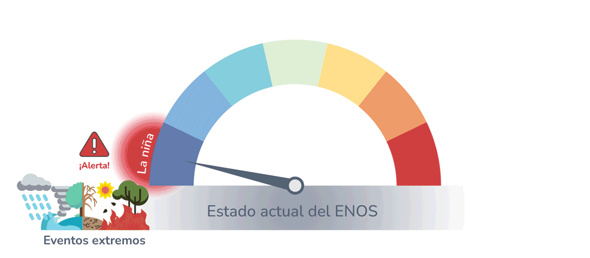
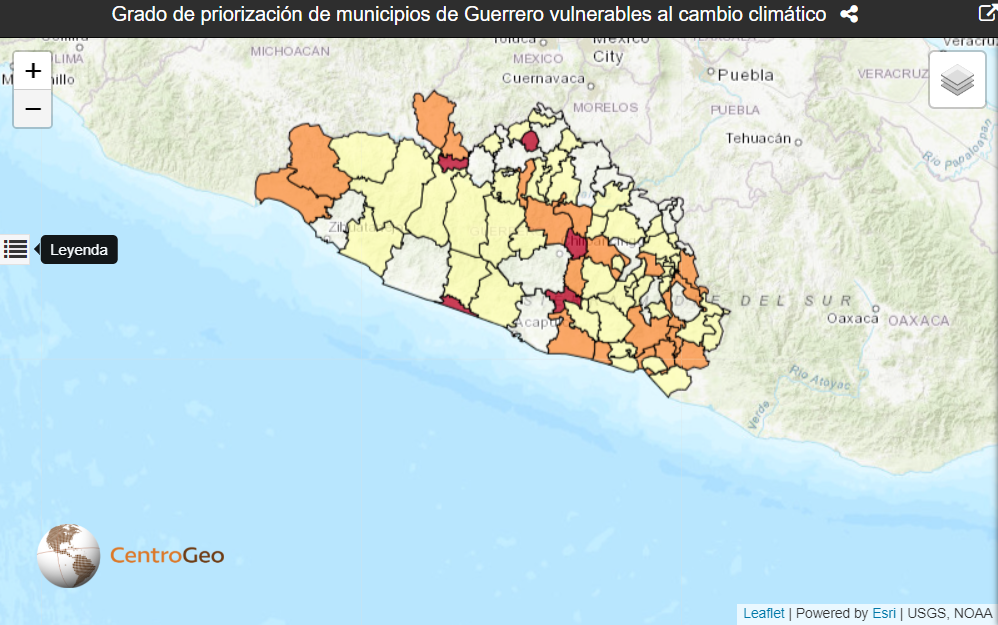

Capitulo 1 Identificación de Territorios con Vulnerabilidad
1.1 Riesgos hidrometeorológicos
1.1.1 Eventos Hidrometeorológicos Extremos
Los eventos climáticos extremos son aquellos fenómenos de condiciones climáticas que suceden de una manera fuera de lo común, ya sea en intensidad, duración, frecuencia e/o impacto. En sí, son eventos climáticos atípicos y por lo general, severos. Los eventos hidrometeorológicos extremos son eventos perturbadores generados por fenómenos atmosféricos, pero específicamente, aquellos que siguen los procesos de la climatología y del ciclo hidrológico. Estos incluyen ciclones tropicales, vientos fuertes, oleaje y marea de tormenta, lluvias, inundaciones, sequías, temperaturas extremas y tormentas severas.
Actualmente, el monitoreo y comprensión de los datos meteorológicos y oceanográficos permite generar modelos de predicción de eventos extremos, los cuales son de gran importancia para advertir a la población de la ocurrencia de eventos potencialmente peligrosos.
Uno de los monitoreos de eventos hidrometeorológicos extremos más importantes es aquel que observa una región del Pacífico Tropical ya que anomalías en la temperatura superficial del mar en esta región nos alertan sobre la ocurrencia de los fenómenos de El Niño y La Niña (ENOS). Dicho fenómeno es de suma importancia pues tiene una gran influencia en las condiciones climáticas de diversas partes del mundo, entre ellos México.
¿Qué es el fenómeno de El Niño/La Niña (ENOS)?
El fenómeno de El Niño-Oscilación del Sur, o ENOS (comúnmente ENSO, por sus siglas en inglés) es un fenómeno natural de gran escala que afecta de manera interanual la temperatura superficial del mar en el Océano Pacífico ecuatorial. Esta es una fluctuación interanual del sistema océano-atmósfera que incluye una fase cálida (El Niño), una fría (La Niña) y una neutral. Sin embargo, a pesar de ser un fenómeno altamente estudiado, sigue siendo difícil de predecir ya que es el resultado de múltiples dinámicas océano-atmosféricas. Las características de cada fase (El Niño/La Niña) pueden variar tanto en intensidad como entre regiones del país y del mundo.
¿Cómo nos afecta?
Los eventos de El Niño y La Niña generan cambios en los patrones de precipitación y temperatura y, por lo general, tienen efectos opuestos sobre las estaciones del año. Sin embargo, estos cambios se pueden observar de diferentes maneras según la región del país. Cabe mencionar que los efectos del ENOS en la región centro/sur del país son más variantes, comparado con el norte.
Invierno
El invierno durante un evento de El Niño suele ser más frío en todo el país y las lluvias típicamente disminuyen en la región sur del país. Durante un evento de La Niña, el invierno suele ser más cálido y seco.
Verano
El verano de El Niño al sur de México suele estar asociado a una mayor disminución de precipitación, lo cual es capaz de provocar grandes sequías. Con la disminución de las lluvias, disminuye también la humedad del suelo. Esto a su vez es capaz de generar mayores incendios forestales, como llegó a suceder durante El Niño de 1998, donde Oaxaca y Chiapas se encontraron entre los estados con mayores pérdidas de hectáreas por incendios. En cambio, los veranos de La Niña suelen ser más húmedos; es decir, la precipitación es más cercana al promedio de una fase neutral del ENOS y en ocasiones más alta.
A pesar de que el ENOS es altamente variante y difícil de predecir, queda claro que cambios intensos en la distribución y abundancia de lluvias son capaces de provocar daños para la población grandes en forma de pérdidas de cultivo (e.g. sequía) y daños materiales (e.g. tormentas).
Figure 1.1: Estado ENOS
El Servicio Meteorológico Nacional (SMN) proporciona información sobre el estado del tiempo a escala nacional y local en nuestro país. Para consultar el estado actual del ENOS, así como más detalles sobre del fenómeno El Niño y sus impactos en México, visite esta liga: Servicio Meteorológico Nacional. ### Declaratorias de emergencia hidrometeorológica
La declaratoria de emergencia se define como “el acto mediante el cual la SEGOB reconoce que uno o varios municipios o delegaciones políticas de una entidad federativa, se encuentran ante la inminencia, alta probabilidad o presencia de una situación anormal generada por un fenómeno natural perturbador, que puede propiciar un riesgo excesivo a la seguridad e integridad o, en su caso, causar un daño a la sociedad.” (SEGOB)
Ante un evento perturbador, estas declaratorias de emergencia son de suma importancia pues tienen el objetivo de acceder a los recursos financieros del Fondo para la Atención de Emergencias FONDEN y dirigirlos a la atención de la vida y la salud de la población afectada (SEGOB; SEMARNAT).
Para la región Pacífico Sur, las declaratorias de emergencias de eventos hidrometeorológicos se deben a lluvias, temperaturas extremas, ciclones tropicales (por ejemplo, tormentas tropicales y huracanes), inundaciones, heladas y sequías (CENAPRED).
1.3 Escenarios de cambio climático
Los escenarios de cambio climático modelan diferentes futuros posibles, cercanos a lejanos, y con emisiones de gases de efecto invernadero cada vez más altas.
Estos escenarios son descripciones plausibles de posibles futuros estados del mundo. Creado a partir de modelos complejos y dinámicos, cada escenario es una alternativa del comportamiento del clima en un futuro. Sin embargo, no deben confundirse con un pronóstico climático. Los escenarios no buscan predecir el futuro, sino ser una herramienta para analizar el cambio climático, incluyendo sus incertidumbres y futuros alternativos y ser un sustento para las iniciativas de adaptación y mitigación (INECC, 2022). Generalmente, un futuro cercano se refiere al periodo de 2015-2035, mientras que un futuro intermedio es de 2046-2065 y un futuro lejano de 2081-2100 (INECC, 2014; IPCC, 2013).
El Grupo Intergubernamental de Expertos sobre el Cambio Climático (IPCC) inicialmente desarrolló una familia de cuatro escenarios de cambio climático llamados Trayectorias de Concentración Representativas (RCPs, por sus siglas en inglés). A partir del 2014 se decidió complementar los RCPs con las Trayectorias Socioeconómicas Compartidas (SSPs, por sus siglas en inglés). Estos nuevos escenarios se basan en cinco narrativas que describen distintos desarrollos socioeconómicos, tal como lo indica su nombre. Al combinar ambas familias de escenarios (RCPs y SSPs) se obtienen entonces cinco escenarios posibles que describen cómo podría evolucionar el mundo en las décadas siguientes y qué desafíos suponen esos cambios para la mitigación y la adaptación. (Escoto et al., 2017)
De esta manera, los escenarios de cambio climático proporcionan información de suma importancia para los tomadores de decisiones y la población en general que nos permite saber qué tan vulnerables estamos ante los posibles impactos y qué medidas se tendrán que tomar para adaptarse a este cambio.
1.3.1 Vulnerabilidad ante el cambio climático
El análisis de vulnerabilidad es una herramienta valiosa pues permite identificar las principales amenazas climáticas de una región y los problemas relacionados a ellas, así como determinar las causas fundamentales que podrían agravar los impactos en la sociedad (INECC, 2019).
La Ley General de Cambio Climático define la vulnerabilidad como el “nivel a que un sistema es susceptible, o no es capaz de soportar los efectos adversos del Cambio Climático, incluida la variabilidad climática y los fenómenos extremos”. Por lo tanto, la vulnerabilidad de un sistema se calcula tomando en cuenta su exposición, sensibilidad y capacidad adaptativa. Las primeras dos aumentan a la vulnerabilidad, mientras que última la disminuye (INECC, 2019).
El Atlas Nacional de Vulnerabilidad al Cambio Climático (ANVCC) define seis vulnerabilidades específicas: vulnerabilidad de asentamientos humanos a deslaves, inundaciones y al incremento potencial de enfermedades transmitidas por vector (como dengue); vulnerabilidad de la producción ganadera a estrés hídrico e inundaciones; y vulnerabilidad de la producción forrajera a estrés hídrico. Estas seis vulnerabilidades consideran la vulnerabilidad actual y futura de los municipios, para un futuro cercano (2015-2039) y en el escenario de cambio climático RCP 8.5.
La vulnerabilidad representada en los siguientes tres mapas es entonces una priorización de los municipios vulnerables al cambio climático definida por el INECC, a partir de las seis vulnerabilidades mencionadas en el párrafo anterior (asentamientos humanos y producción ganadera y forrajera).
El primer nivel de priorización incluye aquellos municipios que actualmente presentan vulnerabilidad alta y muy alta para por lo menos una de las seis vulnerabilidades específicas, así como un aumento para al menos una de las vulnerabilidades en un futuro. Para el segundo nivel de priorización, los municipios actualmente presentan vulnerabilidad alta y muy alta para para tres vulnerabilidades específicas y un aumento para dos o más de ellas en un futuro. El tercer nivel de vulnerabilidad es el de mayor importancia pues los municipios en este nivel actualmente cuentan con vulnerabilidad alta y muy alta para cuatro o más vulnerabilidades específicas. En un futuro, dos o más de estas vulnerabilidades tendrán un aumento (INECC, 2021).
Guerrero
De los 81 municipios de Guerrero, 64 cuentan con una mayor vulnerabilidad al cambio climático y por lo tanto, se encuentran con algún grado de prioridad. En el primer nivel de prioridad se incluyen 40 municipios, los cuales se encuentran por todo el estado, pero principalmente hacia el interior. El segundo nivel de prioridad incluye 19 municipios que se encuentran principalmente del centro al sureste del estado, y con sólo cuatro municipios en la frontera noroeste del estado. En el tercer nivel de prioridad, es decir el grado más alto de vulnerabilidad, se encuentran cinco municipios. Estos se ubican al centro del estado, con uno de ellos en la zona costera.
Figure 1.2: Grado de priorización de municipios de Guerrero vulnerables al cambio climático
1.3.2 Potenciales impactos negativos a la población
Los efectos del cambio climático, bajo cualquiera de los escenarios ya mencionados, se podrán observar como incrementos en la temperatura del ambiente, porcentajes de cambio en la precipitación, elevación del nivel del mar e inundaciones y deslaves como consecuencia de una combinación de diferentes efectos. Todos estos efectos presentan potenciales impactos negativos en la población.
Los mapas de anomalías de temperatura y el porcentaje de cambio de la precipitación están basados en el Atlas interactivo del Grupo de Trabajo I del IPCC y representan el escenario más pesimista (SSP5 RCP 8.5) para un futuro lejano (2081-100) (INECC, 2022).
Las proyecciones de vulnerabilidad al cambio climático (deslaves e inundaciones) representan el escenario RCP8.5 para un futuro cercano (2015-2039) (INECC, 2022; INECC, 2019).
Para la elevación del nivel del mar se utiliza un escenario medianamente alto (SSP3-7.0) para un futuro medianamente cercano (año 2050). Para poder hacer un acercamiento mayor a estos mapas, consulte la Herramienta de detección de riesgos costeros de Climate Central o de click a los mapas de cada estado.